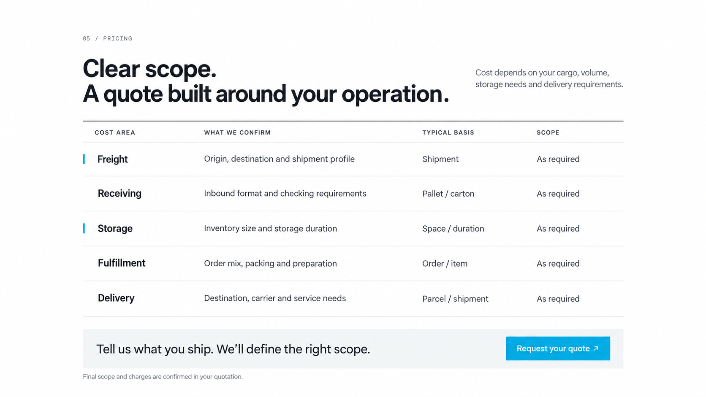

PNPLINE / PRICING REVISION한 화면의 여러 읽기 방향을 두 개의 세로 흐름으로 정리했습니다
기존5행 비용표 다음에 통관·비용 명세와 추가 과금조건을 각각 배치합니다. 각 화면의 설명을 한 방향으로 읽고, 모든 핵심 조건을 바로 볼 수 있습니다.
기존 Pricing 컨셉 기준
원래의5행표 컨셉 이미지이며 현재 브라우저 캡처는 아닙니다.

정지 컨셉 이미지 검토 페이지입니다. 실제 비용 계산과 문의 전송 기능은 포함하지 않습니다.